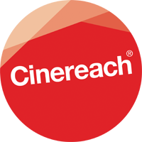

QUEST
A Portrait of an American Family
- 


About
An intimate documentary film that captures ten years in the life of a family living in North Philadelphia.
Synopsis: Filmed with vérité intimacy for over a decade, QUEST is the moving portrait of a family in North Philadelphia. Christopher “Quest” Rainey, along with his wife Christine’a, aka “Ma Quest,” open the door to their home music studio, which serves as a creative sanctuary from the strife that grips their neighborhood. Over the years, the family evolves as everyday life brings a mix of joy and unexpected crisis. Set against the backdrop of a country now in turmoil, QUEST is a tender depiction of an American family whose journey is a profound testament to love, healing and hope.
Status: Our World Premiere will be in competition at Sundance Film Festival in January 2017!
Supporters: In 2014 Quest was accepted into the IFP Documentary Lab. In 2015 Cinereach came on to support the film. In 2016 the film was awarded a MacArthur Foundation documentary film grant and entered into a co-production with ITVS. We are very grateful to our supporters whose investment will enable the film to reach its full potential.
Check out our: Facebook Page
Contact Us: questfurysound@gmail.com

Team
Jonathan Olshefski (Director)

Jonathan Olshefski is an artist and documentary filmmaker. QUEST is his first feature length documentary. He strives to tell intimate and nuanced stories that honor his subjects’ complexity by employing a production process that emphasizes collaboration, dialogue, and relationship to amplify their voices and reflect their points of view in an artful way.
He has an MFA in Film and Media Arts from Temple University and is currently an Associate Professor at Rowan University where he teaches in the department of Radio, TV, and Film. He lives in Philadelphia with his wife and two sons.
You can view his portfolio here: olshefski.org
.Sabrina Schmidt Gordon (Producer)

Sabrina Schmidt Gordon is an award-winning documentary filmmaker. Her editing debut won an Emmy for WGBH’s “Greater Boston Arts” series and she has continued to distinguish herself as a producer, editor, and now, director. She is the Co-Director/Producer and Editor of BaddDDD Sonia Sanchez, winner of Best Film Directed by a Woman of Color at the 2015 African Diaspora International Film Festival. Sabrina is also the Co-Producer and Editor of DOCUMENTED, the story of Pulitzer Prize-winning undocumented journalist, Jose Antonio Vargas. The film had record viewership for its CNN broadcast, received Oscar buzz, and was nominated for the NAACP Image Award for Best Documentary Film. Other credits include Hip-Hop: Beyond Beats and Rhymes, which premiered at the Sundance Film Festival and was named in the Chicago Tribune’s “Best Documentaries of 2007, The New Black, and The New Mad Men, which won the 2015 Imagen Award for Best National Informational Program. Sabrina is on the board of the Yale Visual Law Project with Fred Wiseman and Alex Gibney, and teaches documentary filmmaking at the Columbia University School of Journalism and the CUNY Graduate School of Journalism.
Lindsay Utz (Editor)

Lindsay Utz edited the award-winning documentary Bully, which was released nationally in 2012, and was shortlisted for an Academy Award for Best Documentary. Most recently she edited the Sundance supported In Country, about a group of veterans reenacting the Vietnam War in the woods of Oregon, which had its 2014 premiere at Full Frame Documentary Festival and was named as one of POV’s top 5 films at Hot Docs. Along with the directors of In Country, she was named by The Independent as one of 10 Filmmakers to Watch in 2014.
Utz’s work also includes the ballet documentary First Position, which premiered at the Toronto International Film Festival in 2011, the experimental feature Buoy, executive produced by Todd Haynes, and multiple pieces for the NYTimes Op-Docs series. In addition to working as a full time editor, she teaches documentary editing at Northwestern University. In 2012, Utz was awarded the Karen Schmeer Film Editing Fellowship in honor of Errol Morris’ late editor.
Festivals and Awards
Awards
Winner: Grand Jury Prize - Full Frame 2017
Winner: Kathleen Bryan Edwards Award for Human Rights - Full Frame Documentary Film Festival 2017
Winner: Grand Jury Prize Documentary Feature - Dallas International Film Festival 2017
Winner: Grand Jury Prize Documentary Feature - RiverRun International Film Festival 2017
Winner: Grand Jury Prize Documentary Feature - Ashland Independent Film Festival 2017
Winner: People's Voice Award - Fist Up Film Festival - 2017
Honorable Mention: Grand Jury Prize Documentary Feature - Cleveland International 2017
Honorable Mention: Grand Jury Prize Documentary Feature - Nashville Film Festival 2017
Festivals
• Sundance Film Festival, January 19 – 29, 2017
• True/False Film Festival, March 2 – 5, 2017
• Wisconsin Film Festival, March 30 – April 6, 2017
• New Directors/New Films, March 16 – 27, 2017
• Full Frame Documentary Film Festival, April 6 – 9, 2017
• Cleveland International Film Festival, March 29 – April 9, 2017
• Ashland Independent Film Festival, April 6 – 10, 2017
• Dallas International Film Festival, March 30 – April 9, 2017
• RiverRun International Film Festival, March 30 – April 9, 2017
• Wicked Queer LGBT Film Festival at Museum of Fine Arts Boston, March 30 - April 9, 2017
• Minneapolis/St. Paul International Film Festival, April 13 – 29, 2017
• Nashville Film Festival April 24 – 25, 2017
• BAM: New Voices in Black Cinema Festival, April 26 - 30, 2017
• Hot Docs, Toronto Canada, April 27 – May 7, 2017
• Doxa Documentary Film Festival, Vancouver Canada, May 4 – 14, 2017
• Melbourne Human Rights Arts and Film Festival (Closing Night Film), Melbourne Australia, May 4 – 18, 2017
• Fist Up Film Festival, Oakland California, May 11, 2017
• Docaviv Film Festival, Tel Aviv Israel, May 11 – May 20, 2017
• Seattle International Film Festival, May 18 – June 11, 2017
• One Take Film Festival (Opening Night Film), Rochester NY, May 18 – 21, 2017
• Cinetopia (Opening Night Film), Detroit MI, June 1 – June 11, 2017
• Lighthouse International Film Festival, Beach Haven NJ, June 8 – 11, 2017
• Sheffield Doc/Fest, Sheffield England, June 9 – 14, 2017
• AFI Docs, Washington DC, June 14 – 18, 2017
• Frameline: San Francisco International LGBT Film Festival, San Francisco CA, June 18, 2017
• Rooftop Films, New York NY, July 1, 2017
• Nantucket Film Festival, June 21 – 26, 2017
• Outfest: LGBT Film Festival, Los Angeles CA, July 11, 2017
• Yerbe Buena Center for the Arts, San Francisco CA, July 13 – 17, 2017
• Guanajuato International Film Festival, San Miguel, Mexico, July 21 – 30, 2017
• Traverse City Film Festival, Traverse City MI, July 26 – 27, 2017
• New Zealand International Film Festival, July 20 – August 13, 2017
• Guth Gafa International Documentary Film Festival, Kells, County Meath, Ireland, August 4 - 7, 2017
Press:
https://www.nytimes.com/2017/03/14/movies/the-9-new-directors-you-need-to-watch.html
http://variety.com/2017/film/reviews/quest-review-1202014622/
http://moveablefest.com/moveable_fest/2017/01/jonathan-olshefski-quest.html
http://www.rogerebert.com/sundance/sundance-2017-the-force-quest-trophy
https://www.filmcomment.com/article/mudbound-beatriz-at-dinner-crown-heights-sundance-2017/
http://www.indiewire.com/2017/01/quest-review-documentary-sundance-2017-1201771679/
http://www.sltrib.com/blogs/sundance/4851615-155/sundance-review-quest
http://film-forward.com/documentary/quest
http://www.straight.com/movies/904171/doxa-2017-review-quest
https://nonfics.com/quest-review-c1d20d6332aa
http://www.eyeforfilm.co.uk/review/quest-2016-film-review-by-amber-wilkinson
Donate
All donations are tax deductible if made through our fiscal sponsor:
QUEST is a sponsored project of IFP (www.ifp.org)
Mailing List
Please join our mailing list for exclusive information and opportunities.